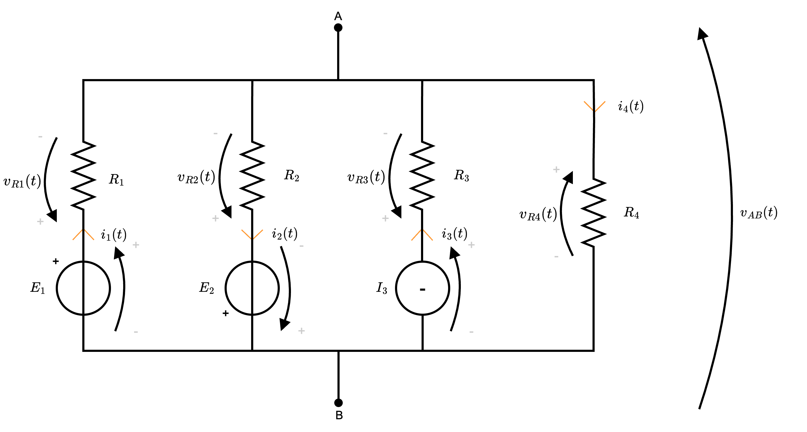
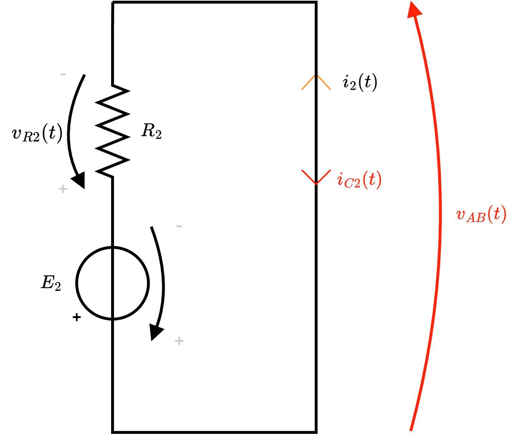

Definizione - Teorema di Tellegen
La sommatoria delle potenze dissipate è uguale alla sommatoria delle potenze assorbite, ovvero \[ \sum_{i = 1}^n P_{G, i} = \sum_{i = 1}^n P_{A, i} \] Questo teorema è un'estensione del principio di conservazione dell'energia.
Nota bene - Ad esempio
Considerando il seguente circuito
si ha che la potenza generata \( P_G\) (dal generatore) è uguale a \[ \begin{array}{ccl}\\ P_G(t) & = & e \cdot i(t) \\ & = & e \cdot \frac{e}{R} \\ & = & \frac{e^2}{R} \end{array} \] mentre la potenza assorbita \( P_A\) (dalla resistenza) è uguale a \[ \begin{array}{ccl} P_A(t) & = & v_R(t) \cdot i(t) \\ & = & e \cdot i(t) \\ & = & e \cdot \frac{e}{R} \\ & = & \frac{e^2}{R} \end{array} \] che è uguale alla potenza generata.
Definizione - Proprietà di linearità
Una funzione \( f\) si dice lineare se sono valide le seguenti proprietà:
- l'additività, ovvero \[ f(a + b) = f(a) + f(b) \]
- l'omogeneità, ovvero \[ f(c \cdot x) = c \cdot f(x) \]
Definizione - Circuto lineare
Un circuito si definisce lineare se è caratterizzato da equazioni costitutive che sono funzioni lineari.
Definizione - Teorema della sostituzione
Considerando due circuiti in cui:  allora, considerando uno dei lati di tensione \( v(t)\) e corrente \( i(t)\), è possibile sostituire il lato con un generatore (di corrente o di tensione) indipendente con stessa corrente (o tensione).
allora, considerando uno dei lati di tensione \( v(t)\) e corrente \( i(t)\), è possibile sostituire il lato con un generatore (di corrente o di tensione) indipendente con stessa corrente (o tensione).
- interagiscono solo tensione \( v(t)\) e corrente \( i(t)\);
- non esistono accoppiamenti (non esistono, ad esempio, nel primo circuito generatori dipendenti da punti del secondo) di alcun tipo;
- vi è un'unica soluzione (cioè il punto di contatto tra i due circuiti è unico);
Definizione - Teorema della sovrapposizione degli effetti
Considerando un circuito lineare, le variabili del circuito (dette effetti) possono essere calcolate come la sommatoria degli effetti dovute alle singole cause (ovvero ai singoli effetti).
Nota bene - La potenza non è lineare
Se il teorema di sovrapposizione degli effetti è valido per la corrente e la tensione (che sono legate da una relazione lineare), ciò non è valido per la potenza (che non lo è).
Esempio - Applicazione del teorema della sovrapposizione degli effetti
Considerando il seguente circuito  calcolare il valore della corrente \( i_3\) utilizzando il teorema di sovrapposizione degli effetti.
calcolare il valore della corrente \( i_3\) utilizzando il teorema di sovrapposizione degli effetti.
Riassunto ciò, si ha che \( i_3\) è uguale a \[ i_3 = i_3' + i_3'' \] dove \( i_3'\) è la corrente dipendente dalla causa \( e_1\) mentre \( i_3''\) è la corrente dipendente dalla causa \( e_2\). È evidente che le resistenze \( R_2\) e \( R_3\) sono in parallelo, ed è quindi possibile applicare la formula del partitore di corrente ottenendo \[ i_3' = \frac{R_2 \ // \ R_3}{R_3} \cdot i_1' \] Occorre quindi calcolare \( i_1'\), ottenibile calcolando la resistenza equivalente (composta da una resistenza in serie alle due resistenze in parallelo) del circuito \[ R_{eq}' = R_1 + (R_2 \ // \ R_3) \] e calcolando la corrente con la legge di Ohm \[ i_1' = \frac{e_1}{R_{eq}'} \] Si ha quindi che \[ \begin{array}{ccl} i_3' & = & \frac{R_2 \ // \ R_3}{R_3} \cdot \overbrace{\frac{e_1}{R_{eq}'} }^{i_1'} \\ & = & \frac{R_2 \ // \ R_3}{R_3} \cdot \frac{e_1}{R_1 + (R_2 \ // \ R_3)} \end{array} \]
È evidente che le resistenze \( R_2\) e \( R_3\) sono in parallelo, ed è quindi possibile applicare la formula del partitore di corrente ottenendo \[ i_3' = \frac{R_2 \ // \ R_3}{R_3} \cdot i_1' \] Occorre quindi calcolare \( i_1'\), ottenibile calcolando la resistenza equivalente (composta da una resistenza in serie alle due resistenze in parallelo) del circuito \[ R_{eq}' = R_1 + (R_2 \ // \ R_3) \] e calcolando la corrente con la legge di Ohm \[ i_1' = \frac{e_1}{R_{eq}'} \] Si ha quindi che \[ \begin{array}{ccl} i_3' & = & \frac{R_2 \ // \ R_3}{R_3} \cdot \overbrace{\frac{e_1}{R_{eq}'} }^{i_1'} \\ & = & \frac{R_2 \ // \ R_3}{R_3} \cdot \frac{e_1}{R_1 + (R_2 \ // \ R_3)} \end{array} \]  Analogamente a \( i_3'\), si ha che è possibile calcolare \( i_3''\) come \[ i_3'' = \frac{R_1 \ // \ R_2}{R_3} \cdot i_2'' \] Occorre quindi calcolare \( i_2''\), ottenibile calcolando la resistenza equivalente (composta da una resistenza in serie alle due resistenze in parallelo) del circuito \[ R_{eq}'' = R_2 + (R_1 \ // \ R_3) \] e calcolando la corrente con la legge di Ohm \[ i_2'' = \frac{e_2}{R_{eq}''} \] Si ha quindi che \[ \begin{array}{ccl} i_3'' & = & \frac{R_1 \ // \ R_2}{R_3} \cdot \overbrace{\frac{e_2}{R_{eq}''}}^{i_2''} \\ & = & \frac{R_1 \ // \ R_2}{R_3} \cdot \frac{e_2}{R_2 + (R_1 \ // \ R_3)} \end{array} \]
Analogamente a \( i_3'\), si ha che è possibile calcolare \( i_3''\) come \[ i_3'' = \frac{R_1 \ // \ R_2}{R_3} \cdot i_2'' \] Occorre quindi calcolare \( i_2''\), ottenibile calcolando la resistenza equivalente (composta da una resistenza in serie alle due resistenze in parallelo) del circuito \[ R_{eq}'' = R_2 + (R_1 \ // \ R_3) \] e calcolando la corrente con la legge di Ohm \[ i_2'' = \frac{e_2}{R_{eq}''} \] Si ha quindi che \[ \begin{array}{ccl} i_3'' & = & \frac{R_1 \ // \ R_2}{R_3} \cdot \overbrace{\frac{e_2}{R_{eq}''}}^{i_2''} \\ & = & \frac{R_1 \ // \ R_2}{R_3} \cdot \frac{e_2}{R_2 + (R_1 \ // \ R_3)} \end{array} \]
Metodo risolutivo
Considerando il teorema, si ha che al fine di trovare "l'effetto" \( i_3\), occorre considerare le "singole cause" (considerandole singolarmente, quindi). Per farlo occorre, considerando un generatore, passivare gli altri generatori.Riassunto ciò, si ha che \( i_3\) è uguale a \[ i_3 = i_3' + i_3'' \] dove \( i_3'\) è la corrente dipendente dalla causa \( e_1\) mentre \( i_3''\) è la corrente dipendente dalla causa \( e_2\).
Calcolo di \( i_3'\)
Al fine di calcolare \( i_3'\), ricordando che passivare un generatore di tensione significa trasformarlo in un cortocircuito, si ha che passivando \( e_2\) si ottiene il seguente circuitoCalcolo di \( i_3''\)
Al fine di calcolare \( i_3''\), passiviamo \( e_2\) e otteniamo il seguente circuitoCalcolo di \( i_3\)
Una volta effettuati tutti i calcoli, è possibile infine ottenere \[ \begin{array}{ccl} i_3 & = & i_3' + i_3'' \\ & = & \frac{R_2 \ // \ R_3}{R_3} \cdot \frac{e_1}{R_{eq}'} + \frac{R_1 \ // \ R_2}{R_3} \cdot \frac{e_2}{R_{eq}''} \\ & = & \frac{R_2 \ // \ R_3}{R_3} \cdot \frac{e_1}{R_1 + (R_2 \ // \ R_3)} + \frac{R_1 \ // \ R_2}{R_3} \cdot \frac{e_2}{R_2 + (R_1 \ // \ R_3)} \end{array} \]Dimostrazione - Teorema di Thevenin
Dato il teorema
Enunciato:
Considerando un circuito composto da una rete ed un carico (rete che assorbe potenza), dove:  dove, la tensione equivalente \( E_{eq, Th}\) è la tensione ai morsetti del carico a circuito aperto (ottenuto cioè "scollegando il carico")
dove, la tensione equivalente \( E_{eq, Th}\) è la tensione ai morsetti del carico a circuito aperto (ottenuto cioè "scollegando il carico")  mentre la resistenza equivalente \( R_{eq,Th}\) è la resistenza equivalente vista da A e B e ottenuta passivando i generatori.
mentre la resistenza equivalente \( R_{eq,Th}\) è la resistenza equivalente vista da A e B e ottenuta passivando i generatori.
- la rete è lineare;
- interagiscono solo tensione \( v(t)\) e corrente \( i(t)\);
- non esistono accoppiamenti;
Dimostrazione:
Per dimostrare questo teorema, consideriamo il generico circuito interponendo tra i morsetti un generatore di corrente (ricordando che mantiene la convenzione dell'utilizzatore in quanto sta sostituendo un carico)
Considerando ora di passivare il generatore di corrente, si ottiene un circuito aperto tra A e B
Considerando ora di passivare la rete, si ottiene che equivale ad un resistore di resistenza \( R_{eq,Th}\) e, applicando LKT si ottiene che \[ \begin{array}{ccl} v''(t) & = & -v_R(t) \\ & = & -R_{eq, Th} \cdot I \end{array} \] considerando la legge di Ohm.
e, applicando LKT si ottiene che \[ \begin{array}{ccl} v''(t) & = & -v_R(t) \\ & = & -R_{eq, Th} \cdot I \end{array} \] considerando la legge di Ohm.
Ricordando il teorema di sovrapposizione degli effetti, si ha che \[ \begin{array}{ccl} v(t) & = & v'(t) + v''(t) \\ & = & E_{eq, Th} - R_{eq, Th} \cdot I \end{array} \] che è esattamente la tensione ai morsetti AB nel circuito equivalente di Thevenin con quel carico.
Al fine di calcolare la tensione \( v(t)\) è possibile utilizzare il teorema di sovrapposizione degli effetti.
Considerando ora di passivare il generatore di corrente, si ottiene un circuito aperto tra A e B
in cui si ha che \( v'(t)\) coincide esattamente con \( E_{eq,Th}\).
Considerando ora di passivare la rete, si ottiene che equivale ad un resistore di resistenza \( R_{eq,Th}\)
Ricordando il teorema di sovrapposizione degli effetti, si ha che \[ \begin{array}{ccl} v(t) & = & v'(t) + v''(t) \\ & = & E_{eq, Th} - R_{eq, Th} \cdot I \end{array} \] che è esattamente la tensione ai morsetti AB nel circuito equivalente di Thevenin con quel carico.
Esempio - Applicazione del teorema di Thevenin
Considerando il seguente circuito calcolare il valore della corrente \( i_3\) utilizzando il teorema di Thevenin.  (ndr, da notare che per rendere coerente il segno della corrente \( i_1\) con la corrente \( i_2\) che sarebbero da convenzione precedente invertite, occorre invertire il verso della tensione \( v_{R2}\)).
(ndr, da notare che per rendere coerente il segno della corrente \( i_1\) con la corrente \( i_2\) che sarebbero da convenzione precedente invertite, occorre invertire il verso della tensione \( v_{R2}\)).
È ora possibile applicare LKT alla seguente maglia ed ottenere l'equazione \[ M_1: \quad e_1 - v_{R1} - E_{eq, Th} = 0 \] che permette di ricavare la formula \[ \begin{array}{ccl} E_{eq, Th} & = & e_1 - v_{R1} \\ & = & e_1 - R_1 \cdot i \end{array} \] Al fine di calcolare questo valore, applichiamo LKT alla maglia esterna \( M_2\)
ed ottenere l'equazione \[ M_1: \quad e_1 - v_{R1} - E_{eq, Th} = 0 \] che permette di ricavare la formula \[ \begin{array}{ccl} E_{eq, Th} & = & e_1 - v_{R1} \\ & = & e_1 - R_1 \cdot i \end{array} \] Al fine di calcolare questo valore, applichiamo LKT alla maglia esterna \( M_2\)  ed otteniamo l'equazione \[ M_2: \quad e_1 - v_{R1} - v_{R2} - e_2 = 0 \] da cui \[ M_2: \quad e_1 - R_1 \cdot i - R_2 \cdot i - e_2 = 0 \] che permette di ricavare la formula \begin{aligned} & e_1 - R_1 \cdot i - R_2 \cdot i - e_2 = 0 & \iff \\ & -R_1 \cdot i - R_2 \cdot i = e_2 - e_1 & \iff \\ & -i \cdot (R_2 + R_1) = e_2 - e_1 & \iff \\ & i = -\frac{e_2 - e_1}{R_1 + R_2} & \iff \\ & i = \frac{e_1 - e_2}{R_1 + R_2} & \end{aligned} e quindi, si ha che la tensione equivalente di Thevenin è uguale a \[ \begin{array}{ccl} E_{eq, Th} & = & e_1 - R_1 \cdot i \\ & = & e_1 - R_1 \cdot \frac{e_1 - e_2}{R_1 + R_2} \\ & = & e_1 - \frac{R_1 \cdot e_1 - R_1 \cdot e_2}{R_1 + R_2} \\ & = & \frac{e_1 \cdot R_1 + e_1 \cdot R_2 - R_1 \cdot e_1 + R_1 \cdot e_2}{R_1 + R_2} \\ & = & \frac{e_1 \cdot R_2 + R_1 \cdot e_2}{R_1 + R_2} \end{array} \]
ed otteniamo l'equazione \[ M_2: \quad e_1 - v_{R1} - v_{R2} - e_2 = 0 \] da cui \[ M_2: \quad e_1 - R_1 \cdot i - R_2 \cdot i - e_2 = 0 \] che permette di ricavare la formula \begin{aligned} & e_1 - R_1 \cdot i - R_2 \cdot i - e_2 = 0 & \iff \\ & -R_1 \cdot i - R_2 \cdot i = e_2 - e_1 & \iff \\ & -i \cdot (R_2 + R_1) = e_2 - e_1 & \iff \\ & i = -\frac{e_2 - e_1}{R_1 + R_2} & \iff \\ & i = \frac{e_1 - e_2}{R_1 + R_2} & \end{aligned} e quindi, si ha che la tensione equivalente di Thevenin è uguale a \[ \begin{array}{ccl} E_{eq, Th} & = & e_1 - R_1 \cdot i \\ & = & e_1 - R_1 \cdot \frac{e_1 - e_2}{R_1 + R_2} \\ & = & e_1 - \frac{R_1 \cdot e_1 - R_1 \cdot e_2}{R_1 + R_2} \\ & = & \frac{e_1 \cdot R_1 + e_1 \cdot R_2 - R_1 \cdot e_1 + R_1 \cdot e_2}{R_1 + R_2} \\ & = & \frac{e_1 \cdot R_2 + R_1 \cdot e_2}{R_1 + R_2} \end{array} \]  In questo caso, dato che stiamo considerando la "resistenza equivalente vista da AB", si ha che le due resistenze sono in parallelo ottenendo quindi che \[ \begin{array}{ccl} R_{eq, Th} & = & R_1 \ // \ R_2 \\ & = & \frac{R_1 \cdot R_2}{R_1 + R_2} \end{array} \]
In questo caso, dato che stiamo considerando la "resistenza equivalente vista da AB", si ha che le due resistenze sono in parallelo ottenendo quindi che \[ \begin{array}{ccl} R_{eq, Th} & = & R_1 \ // \ R_2 \\ & = & \frac{R_1 \cdot R_2}{R_1 + R_2} \end{array} \]  dove è possibile calcolare la resistenza equivalente del circuito \[ \begin{array}{ccl} R_{eq*} & = & \frac{R_1 \cdot R_2}{R_1 + R_2} + R_3 \\ & = & \frac{R_1 \cdot R_2 + R_3 \cdot R_1 + R_3 \cdot R_2}{R_1 + R_2} \end{array} \] per poi calcolare la corrente \( i_3(t)\) \[ \begin{array}{ccl} i_3(t) & = & \frac{E_{eq,Th}}{R_{eq*}} \\ & = & \frac{e_1 \cdot R_2 + R_1 \cdot e_2}{R_1 + R_2} \cdot \frac{R_1 + R_2}{R_1 \cdot R_2 + R_3 \cdot R_1 + R_3 \cdot R_2} \\ & = & \frac{e_1 \cdot R_2 + R_1 \cdot e_2}{R_1 \cdot R_2 + R_3 \cdot R_1 + R_3 \cdot R_2} \end{array} \]
dove è possibile calcolare la resistenza equivalente del circuito \[ \begin{array}{ccl} R_{eq*} & = & \frac{R_1 \cdot R_2}{R_1 + R_2} + R_3 \\ & = & \frac{R_1 \cdot R_2 + R_3 \cdot R_1 + R_3 \cdot R_2}{R_1 + R_2} \end{array} \] per poi calcolare la corrente \( i_3(t)\) \[ \begin{array}{ccl} i_3(t) & = & \frac{E_{eq,Th}}{R_{eq*}} \\ & = & \frac{e_1 \cdot R_2 + R_1 \cdot e_2}{R_1 + R_2} \cdot \frac{R_1 + R_2}{R_1 \cdot R_2 + R_3 \cdot R_1 + R_3 \cdot R_2} \\ & = & \frac{e_1 \cdot R_2 + R_1 \cdot e_2}{R_1 \cdot R_2 + R_3 \cdot R_1 + R_3 \cdot R_2} \end{array} \]
Tensione equivalente di Thevenin
Al fine di ottenere il circuito equivalente di Thevenin, occorre calcolare la tensione equivalente \( E_{eq, Th}\) ottenibile rimuovendo il caricoÈ ora possibile applicare LKT alla seguente maglia
Resistenza equivalente di Thevenin
Al fine di calcolare la resistenza equivalente di Thevenin, consideriamo di passivare tutti i generatori, ottenendo il seguente circuitoCircuito equivalente di Thevenin
Una volta effettuati tutti i calcoli, è possibile ottenere il seguente circuitoDimostrazione - Teorema di Norton
Dato il teorema
Enunciato:
Considerando un circuito composto da una rete con capi i nodi A e B, dove:  dove, la corrente equivalente \( I_{eq, Nt}\) è la corrente di cortocircuito tra i morsetti A e B (ovvero la rete il cui carico è sostituito da un cortocircuito)
dove, la corrente equivalente \( I_{eq, Nt}\) è la corrente di cortocircuito tra i morsetti A e B (ovvero la rete il cui carico è sostituito da un cortocircuito)
- la rete è lineare;
- non esistono accoppiamenti esterni;
mentre la resistenza equivalente \( R_{eq, Nt}\) è la resistenza equivalente vista da A e B e ottenuta passivando i generatori.
Dimostrazione:
Per dimostrare questo teorema, consideriamo il generico circuito interponendo tra i morsetti un generatore di tensione (ricordando che mantiene la convenzione dell'utilizzatore in quanto sta sostituendo un carico)  Al fine di calcolare la corrente \( i(t)\) è possibile utilizzare il teorema di sovrapposizione degli effetti.
Al fine di calcolare la corrente \( i(t)\) è possibile utilizzare il teorema di sovrapposizione degli effetti.
Considerando ora di passivare il generatore di tensione, si ottiene un cortocircuito tra A e B
Considerando ora di passivare la rete, si ottiene che equivale ad un resistore di resistenza \( R_{eq,Nt}\)
Considerando ora di passivare il generatore di tensione, si ottiene un cortocircuito tra A e B
in cui si ha che \( i'(t)\) coincide esattamente con \( I_{eq,Nt}\).
Considerando ora di passivare la rete, si ottiene che equivale ad un resistore di resistenza \( R_{eq,Nt}\)
e, applicando LKT, si ottiene che \[ v_R(t) = -E \] e, applicando la legge di Ohm a \( v_R(t)\) si ha che \[ R_{eq, Nt} \cdot i''(t) = -E \] Da ciò, è possibile dedurre che \[ i''(t) = \frac{-E}{R_{eq, Nt}} \] Ricordando il teorema di sovrapposizione degli effetti, si ha che \[ \begin{array}{ccl} i(t) & = & i'(t) + i''(t) \\ & = & I_{eq, Nt} - \frac{E}{R_{eq,Nt}} \end{array} \] che è esattamente la corrente \( I\) del circuito equivalente.
Definizione - Relazione tra circuito equivalente di Thevenin e circuito equivalente di Norton
Considerando uno stesso circuito, esiste una correlazione tra il circuito equivalente di Thevenin e quello di Norton applicati tra gli stessi nodi. Si ha infatti che:
- la resistenza equivalente di Thevenin è equivalente alla resistenza equivalente di Norton, ovvero \[ R_{eq, Th} = R_{eq, Nt} = R_{eq} \]
- la tensione equivalente di Thevenin è equivalente a \[ E_{eq, Th} = I_{eq, Nt} \cdot R_{eq} \]
Esempio - Applicazione del teorema di Norton
Considerando il seguente circuito calcolare il valore della corrente \( i_3\) utilizzando il teorema di Norton.  È ora possibile applicare LKC al nodo A ottenendo l'equazione \[ \begin{array}{ccl} I_{eq, Nt} & = & i_1(t) + i_2(t) \\ & = & \frac{e_1}{R_1} + \frac{e_2}{R_2} \end{array} \]
È ora possibile applicare LKC al nodo A ottenendo l'equazione \[ \begin{array}{ccl} I_{eq, Nt} & = & i_1(t) + i_2(t) \\ & = & \frac{e_1}{R_1} + \frac{e_2}{R_2} \end{array} \]  dove è possibile calcolare la resistenza equivalente del circuito \[ \begin{array}{ccl} R_{eq*} & = & R_{eq,Nt} \ // \ R_3 \\ & = & \frac{R_{eq, Nt} \cdot R_3}{R_{eq, Nt} + R_3} \end{array} \] da cui è poi possibile calcolare la corrente \( i_3(t)\) utilizzando la formula del partitore di corrente \[ \begin{array}{ccl} i_3(t) & = & I_{eq,Nt} \cdot \frac{R_{eq*}}{R_3} \\ & = & \left( \frac{e_1}{R_1} + \frac{e_2}{R_2} \right) \cdot \frac{R_{eq, Nt} \cdot R_3}{R_{eq, Nt} + R_3} \cdot \frac{1}{R_3} \\ & = & \left( \frac{e_1 \cdot R_2 + e_2 \cdot R_1}{R_1 \cdot R_2} \right) \cdot \frac{R_{eq, Nt}}{R_{eq, Nt} + R_3} \\ & \overset{\text{sost.} \ R_{eq, Nt}}{=} & \left( \frac{e_1 \cdot R_2 + e_2 \cdot R_1}{R_1 \cdot R_2} \right) \cdot \frac{\frac{R_1 \cdot R_2}{R_1 + R_2}}{R_{eq, Nt} + R_3} \\ & = & \left( \frac{e_1 \cdot R_2 + e_2 \cdot R_1}{R_1 \cdot R_2} \right) \cdot \frac{\frac{R_1 \cdot R_2}{R_1 + R_2}}{R_{eq, Nt} + R_3} \\ & = & \left( e_1 \cdot R_2 + e_2 \cdot R_1 \right) \cdot \frac{1}{R_{eq, Nt} + R_3} \cdot \frac{1}{R_1 + R_2} \end{array} \]
dove è possibile calcolare la resistenza equivalente del circuito \[ \begin{array}{ccl} R_{eq*} & = & R_{eq,Nt} \ // \ R_3 \\ & = & \frac{R_{eq, Nt} \cdot R_3}{R_{eq, Nt} + R_3} \end{array} \] da cui è poi possibile calcolare la corrente \( i_3(t)\) utilizzando la formula del partitore di corrente \[ \begin{array}{ccl} i_3(t) & = & I_{eq,Nt} \cdot \frac{R_{eq*}}{R_3} \\ & = & \left( \frac{e_1}{R_1} + \frac{e_2}{R_2} \right) \cdot \frac{R_{eq, Nt} \cdot R_3}{R_{eq, Nt} + R_3} \cdot \frac{1}{R_3} \\ & = & \left( \frac{e_1 \cdot R_2 + e_2 \cdot R_1}{R_1 \cdot R_2} \right) \cdot \frac{R_{eq, Nt}}{R_{eq, Nt} + R_3} \\ & \overset{\text{sost.} \ R_{eq, Nt}}{=} & \left( \frac{e_1 \cdot R_2 + e_2 \cdot R_1}{R_1 \cdot R_2} \right) \cdot \frac{\frac{R_1 \cdot R_2}{R_1 + R_2}}{R_{eq, Nt} + R_3} \\ & = & \left( \frac{e_1 \cdot R_2 + e_2 \cdot R_1}{R_1 \cdot R_2} \right) \cdot \frac{\frac{R_1 \cdot R_2}{R_1 + R_2}}{R_{eq, Nt} + R_3} \\ & = & \left( e_1 \cdot R_2 + e_2 \cdot R_1 \right) \cdot \frac{1}{R_{eq, Nt} + R_3} \cdot \frac{1}{R_1 + R_2} \end{array} \]
Corrente equivalente di Norton
Al fine di ottenere il circuito equivalente di Norton, occorre calcolare la corrente di cortocircuito ottenibile sostituendo il caricoResistenza equivalente di Norton
Al fine di calcolare la resistenza equivalente di Norton, consideriamo di passivare tutti i generatori, ottenendo il seguente circuito In questo caso, dato che stiamo considerando la "resistenza equivalente vista da AB", si ha che le due resistenze sono in parallelo ottenendo quindi che \[ \begin{array}{ccl} R_{eq, Nt} & = & R_1 \ // \ R_2 \\ & = & \frac{R_1 \cdot R_2}{R_1 + R_2} \end{array} \]
Circuito equivalente di Norton
Una volta effettuati tutti i calcoli, è possibile ottenere il seguente circuitoDimostrazione - Teorema del massimo trasferimento di potenza
Dato il teorema
Enunciato:
Considerando un generatore reale (o un bipolo equivalente di Thevenin) a cui è collegato un carico
si ha che affinchè la potenza assorbita da \( R_L\) sia massima, allora si deve avere che \[ R_L = R \] e la potenza massima assorbita è pari a \[ P_{L, max} = \frac{E^2}{4 \cdot R} \]
Dimostrazione:
Per dimostrare questo teorema, consideriamo che al fine di calcolare la potenza assorbita da \( R_L\) è necessario calcolare \[ \begin{array}{ccl} P_L & = & R_L \cdot I^2 \\ & = & R_L \cdot \left( \frac{E}{R + R_L} \right)^2 \end{array} \] Da questa relazione, è possibile calcolare la potenza in due casi limite:
A questo fine, calcoliamo la derivata di \( P_L\) rispetto a \( R_L\) al fine di calcolare il punto di massimo \[ \begin{array}{ccl} \frac{d}{d R_L} P_L & = & \frac{d}{d R_L} \left[ R_L \cdot \left( \frac{E}{R + R_L} \right)^2 \right] \\ & \overset{x = R_L}{=} & \frac{d}{d x} \left[ x \cdot \left( \frac{E}{R + x} \right)^2 \right] \\ & = & \frac{d}{d x} \left[ x \cdot \frac{E^2}{(R + x)^2} \right] \\ & = & E^2 \cdot \frac{d}{d x} \left[ x \cdot \frac{1}{(R + x)^2} \right] \\ & = & E^2 \cdot \frac{d}{d x} \left[ \frac{x}{(R + x)^2} \right] \\ & = & E^2 \cdot \frac{(R + x)^2 - 2 \cdot x \cdot (R + x)}{(R + x)^4} \\ & = & E^2 \cdot \frac{R^2 + x^2 + 2 \cdot R \cdot x - 2 \cdot x \cdot R - 2 \cdot x^2}{(R + x)^4} \\ & = & E^2 \cdot \frac{R^2 - x^2}{(R + x)^4} \end{array} \] È ora possibile porre uguale a \( 0\) al fine di trovare le soluzioni della derivata prima \begin{aligned} & E^2 \cdot \frac{R^2 - x^2}{(R + x)^4} = 0 & \iff \\ & R^2 - x^2 = 0 & \iff \\ & R^2 = x^2 & \iff \\ & R = x & \overset{R_L = x}{\iff} \\ & R = R_L & \end{aligned} ovvero si ha che la potenza è massima se \( R = R_L\).
Ora, al fine di calcolare la potenza massima assorbita, si può calcolare \[ \begin{array}{ccl} P_{L, max} & = & P_L \mid_{R_L = R} \\ & = & R \cdot \left( \frac{E}{R + R} \right)^2 \\ & = & R \cdot \frac{E^2}{4 \cdot R^2} \\ & = & \frac{E^2}{4 \cdot R} \end{array} \] che dimostra il teorema.
- nel caso sia presente un cortocircuito, ovvero \( R_L \to 0\), si ha che la potenza assorbita sarebbe nulla \[ \text{se} \ R_L \to 0 \qquad \implies \qquad P_L = 0 \]
- nel caso sia presente un circuito aperto, ovvero \( R_L \to +\infty\), si ha che la potenza assorbita sarebbe nulla.
A questo fine, calcoliamo la derivata di \( P_L\) rispetto a \( R_L\) al fine di calcolare il punto di massimo \[ \begin{array}{ccl} \frac{d}{d R_L} P_L & = & \frac{d}{d R_L} \left[ R_L \cdot \left( \frac{E}{R + R_L} \right)^2 \right] \\ & \overset{x = R_L}{=} & \frac{d}{d x} \left[ x \cdot \left( \frac{E}{R + x} \right)^2 \right] \\ & = & \frac{d}{d x} \left[ x \cdot \frac{E^2}{(R + x)^2} \right] \\ & = & E^2 \cdot \frac{d}{d x} \left[ x \cdot \frac{1}{(R + x)^2} \right] \\ & = & E^2 \cdot \frac{d}{d x} \left[ \frac{x}{(R + x)^2} \right] \\ & = & E^2 \cdot \frac{(R + x)^2 - 2 \cdot x \cdot (R + x)}{(R + x)^4} \\ & = & E^2 \cdot \frac{R^2 + x^2 + 2 \cdot R \cdot x - 2 \cdot x \cdot R - 2 \cdot x^2}{(R + x)^4} \\ & = & E^2 \cdot \frac{R^2 - x^2}{(R + x)^4} \end{array} \] È ora possibile porre uguale a \( 0\) al fine di trovare le soluzioni della derivata prima \begin{aligned} & E^2 \cdot \frac{R^2 - x^2}{(R + x)^4} = 0 & \iff \\ & R^2 - x^2 = 0 & \iff \\ & R^2 = x^2 & \iff \\ & R = x & \overset{R_L = x}{\iff} \\ & R = R_L & \end{aligned} ovvero si ha che la potenza è massima se \( R = R_L\).
Ora, al fine di calcolare la potenza massima assorbita, si può calcolare \[ \begin{array}{ccl} P_{L, max} & = & P_L \mid_{R_L = R} \\ & = & R \cdot \left( \frac{E}{R + R} \right)^2 \\ & = & R \cdot \frac{E^2}{4 \cdot R^2} \\ & = & \frac{E^2}{4 \cdot R} \end{array} \] che dimostra il teorema.
Dimostrazione - Teorema di Millman
Dato il teorema
Enunciato:
Considerando una rete lineare con più lati collegati in parallelo ai nodi A e B  si ha che la tensione ai capi A e B è pari al rapporto tra la sommatoria delle correnti di cortocircuito e la sommatoria delle conduttanze dei lati (ndr, ignorando i lati in cui è presente un generatore di corrente), cioè \[ v_{AB}(t) = \frac{\sum_{j = 1}^n \frac{e_j}{R_j} + \sum_{k = 1}^n i_k(t)}{\sum_{k = 1}^n \frac{1}{R_k}} \]
si ha che la tensione ai capi A e B è pari al rapporto tra la sommatoria delle correnti di cortocircuito e la sommatoria delle conduttanze dei lati (ndr, ignorando i lati in cui è presente un generatore di corrente), cioè \[ v_{AB}(t) = \frac{\sum_{j = 1}^n \frac{e_j}{R_j} + \sum_{k = 1}^n i_k(t)}{\sum_{k = 1}^n \frac{1}{R_k}} \]
Nota bene - In altre parole
Considerando
- le grandezze con pedice \( \ _k\) quelle appartenenti ad un lato con generatori di tensione;
- le grandezze con pedice \( \ _i\) quelle appartenenti ad un lato senza generatori;
- le grandezze con pedice \( \ _m\) quelle appartenenti ad un lato con generatori di corrente
Dimostrazione:
Per "dimostrare" questo teorema, consideriamo il seguente circuito si ha che è possibile considerare di applicare LKC sul nodo A. Si ha infatti che \[ A: \quad i_1(t) - i_2(t) + i_3(t) - i_4(t) = 0 \] ed è quindi necessario calcolare

- considerando il primo lato, si ha che \[ v_{AB}(t) = E_1 - R_1 \cdot i_1(t) \] ed è quindi possibile dedurre \[ i_1(t) = \frac{E_1 - v_{AB}(t)}{R_1} \]
- considerando il secondo lato, si ha che \[ v_{AB}(t) = -E_2 + R_2 \cdot i_2(t) \] ed è quindi possibile dedurre \[ i_2(t) = \frac{v_{AB}(t) + E_2}{R_2} \]
- considerando il terzo lato, si ha che \[ i_3(t) = I_3 \]
- considerando il quarto lato, si ha che \[ i_4(t) = \frac{v_{AB}(t)}{R_4} \]
Esempio - Applicazione del teorema di Millman
Considerando il seguente circuito
calcolare la tensione \( v_{AB}(t)\) utilizzando il teorema di Millman.
Calcolo delle correnti di cortocircuito
Al fine di calcolare le correnti di cortocircuito, consideriamo che:- per calcolare la corrente di cortocircuito del primo lato, consideriamo la rete che è semplicemente calcolabile come \[ i_{C1}(t) = i_1(t) = \frac{E_1}{R_1} \]
- per calcolare la corrente di cortocircuito del secondo lato, consideriamo la rete che è semplicemente calcolabile come \[ i_{C2}(t) = -i_2(t) = -\frac{E_2}{R_2} \]
- per calcolare la corrente di cortocircuito del terzo lato, consideriamo la rete che è semplicemente calcolabile considerando il generatore di corrente che impone la corrente \( I_3\) come \[ i_{C3}(t) = i_3(t) = I_3 \]
- per calcolare la corrente di cortocircuito del quarto lato, è sufficiente considerare che non è presente alcun generatore e, quindi, la corrente è nulla \[ i_{C4}(t) = 0 \]